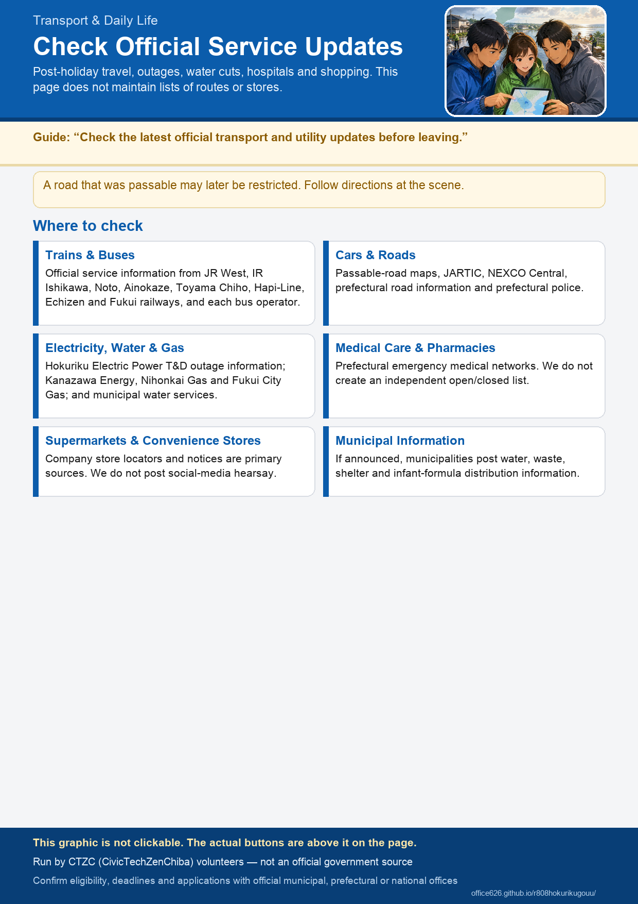

Travel and Daily Life
This page directs people traveling in Ishikawa, Toyama, and Fukui, and those having difficulty with utilities or shopping, to official information. Train service, road closures, and store hours change constantly. This page does not maintain a current list of route sections or store names. Always check the linked official source.
Trains and Buses
JR West runs the lines between prefectures; each prefecture also has its own railway companies. Official operator guidance should also be your first source for alternative transport.
- JR West train service information, Hokuriku area Official
- JR West, including notices and limited express information Official
- IR Ishikawa Railway (Ishikawa) Official
- Noto Railway service status (Ishikawa, Noto Peninsula) Official
- Hokuriku Railroad, trains and buses (Ishikawa) Official
- Ainokaze Toyama Railway (Toyama) Official
- Toyama Chiho Railroad, trains and buses (Toyama) Official
- Manyosen (Toyama, Takaoka and Imizu) Official
- Hapi-Line Fukui (Fukui) Official
- Echizen Railway (Fukui) Official
- Fukui Railway (Fukui) Official
Cars and Roads
A road with recent traffic records may be restricted later. Follow restrictions and directions at the scene.
- Toyota Passable Roads Map (shows recent traffic records during disasters; it is not a guarantee) Official
- Japan Road Traffic Information Center (JARTIC) Official
- NEXCO Central (closures and restoration on the Hokuriku and Tokai-Hokuriku expressways) Official
- Ministry of Land, Infrastructure, Transport and Tourism: Road Disaster Prevention Government
Electricity, Water, and Gas
Restoration speed differs by provider. City gas is supplied by a different company depending on the city, and LP gas by each local dealer. For outages, water conservation, and service restoration, first check official municipal and water utility sources.
- Hokuriku Electric Power Transmission and Distribution: outage information Official
- Hokuriku Electric Power, notices Official
- Kanazawa Energy (city gas in Kanazawa) Official
- Nihonkai Gas (city gas in Toyama and Ishikawa) Official
- Fukui City Gas (city gas in Fukui) Official
- Your municipality's official information on water, waste, and shelters
Medical Facilities and Pharmacies
Use the prefectural search service and each provider's official website to confirm whether it is open. This site does not create its own open-or-closed list.
- Ministry of Health, Labour and Welfare: Emergency and Disaster Medicine Government
- Kusuri no Aoki, stores and notices Official
- Genky, stores and notices Official
- Sugi Pharmacy Official
- Welcia, stores and notices Official
- MatsukiyoCocokara store search Official
Supermarkets and Daily Necessities
Each company's store search and notices are the primary source for individual store hours. This site does not publish secondhand social-media reports. Check municipal pages only when a municipality officially announces distribution of infant formula or other supplies.
- Albis (Toyama, Ishikawa, Fukui) Official
- Valor (Toyama, Ishikawa, Fukui) Official
- Heiwado (Fukui and elsewhere) Official
- AEON, notices and stores Official
- Lawson store information during disasters Official
- 7-Eleven Official
- FamilyMart Official
Guidance for people whose homes were damaged / Information for affected shops, factories, and other businesses
